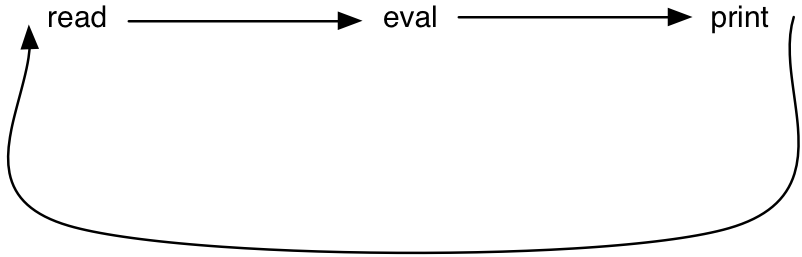
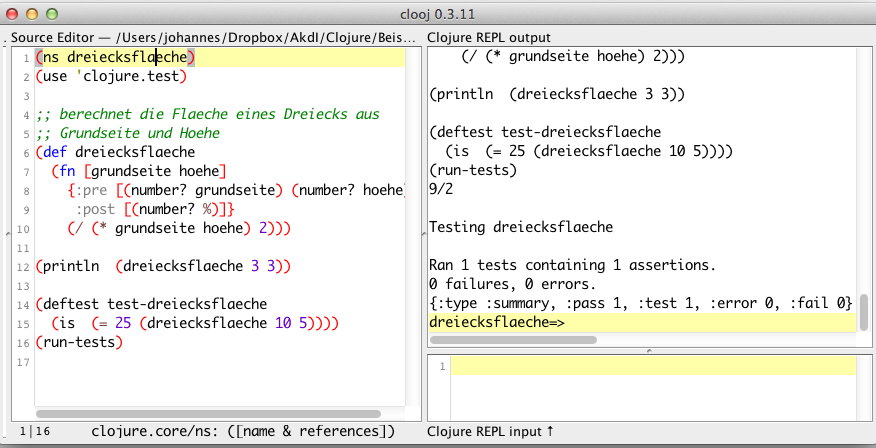

Funktionale Programmierung – Grundlagen
Programmierparadigmen
Programmieren mit Funktionen
Merkmale der imperativen Programmierung
- Wesentliche Konzepte:
- Variablen: benannte Speicherzellen
- Zuweisung: Verändern des Wertes einer Variablen
- Die Werte der Variablen repräsentieren den Zustand der Maschine.
- Das Programm ist eine Folge von Zustandsänderungen.
- Im imperativen Programmierstil spiegelt sich die Von-Neumann-Architektur wider (hinderlich bei der Programmierung komplexer Anwendungen).
- Imperative Programme sind nicht referenztransparent: \(f(x)+f(x)\) ist nicht notwendigerweise gleich \(2\cdot f(x)\).
Merkmale der funktionalen Programmierung
- Gute mathematische Grundlage der Programmierung (Funktionsbegriff)
- Programme werden kürzer und besser lesbar.
- Verarbeitung komplexer (häufig symbolischer) Datenstrukturen
- Keine Variablen als benannte Speicherzellen
- Keine Iteration
- Funktionale Sprachen haben besondere Bedeutung für die Definition der Semantik von Programmiersprachen:
- z.B. durch Definition eines Interpreters, geschrieben in einer funktionalen Sprache.
Ein erstes Beispiel
Tafelübung funktionale Abstraktion (fn) einführen
Eine einfache Funktion
- Berechnung des Bruttobetrags einer Rechnung aus dem Nettobetrag:
- mathematisch
\(brutto(netto, mhrwrtstr) = netto + netto \frac{mhrwrtstr}{100}\) Definition einer Funktion
brutto:(def brutto (fn [netto mhrwrtstr] (+ netto (/ (* netto mhrwrtstr) 100))))
- mathematisch
Aufbau von Ausdrücken
- Jeder Ausdruck ist von der Form
\[(operator\ operand_{1} \ldots\ operand_{n})\] - Operatoren sind Namen von
- Standardfunktionen: +, /,
sqrt, … - eigenen Funktionen:
brutto, … - Pseudofunktionen:
def,fn, …
- Standardfunktionen: +, /,
- Operanden sind
- Konstanten: 3.14, …
- Variable:
netto, … - Ausdrücke:
(f ....)
Wert eines Ausdrucks
- Anwendung einer Funktion auf ihre Argumente:
(brutto 100.0 16.0) - Ersetze jedes Auftreten von
nettodurch 100.0 und vonmhrwrtstrdurch 16.0:
= (+ 100.0 (/ (* 100.0 16.0) 100)) - Auswertung erfolgt von innen nach außen:
= (+ 100.0 (/ (* 100.0 16.0) 100))
= (+ 100.0 (/ 1600.0 100)) - im nächsten Schritt:
= (+ 100.0 (/ 1600.0 100))
= (+ 100.0 16.0)) - schließlich:
= 116.0
Clojure
Eigenschaften von Clojure
Clojure …
- ist ein Lisp-Dialekt.
- läuft auf der Java Virtual Machine.
- ermöglicht verschiedene Programmierstile (imperativ, funktional, objektorientiert, …).
- behandelt Funktionen als Werte erster Ordnung (first class values),
d.h. sie können u.a. …
- als Argumente an Prozeduren/Funktionen/Methoden übergeben werden,
- als Resultate von Prozeduren/Funktionen/Methoden auftreten.
- besitzt eine einzige Auswertungsregel für die Anwendung von Funktionen (Ausnahmen für Pseudofunktionen).
Web-Seiten zu Clojure
Benutzung von Clojure
- Try Clojure
- Command line tool - the repl
java -cp clojure.jar clojure.main - Clooj - editor and IDE written entirely in Clojure itself
- LightTable is a new interactive IDE …
- Leiningen
- La Clojure and IntelliJ IDEA
- Eclipse and Counterclockwise
- Clojure with Emacs
Die Read-Eval-Print-Loop
- Read: lies einen Ausdruck
- Eval(uate): werte ihn aus
- Print: gib das Ergebnis aus

brutto in der Repl
Demonstration
Methodische Abstraktion – Entwurfsvorschrift I
Entwurfsvorschriften - Übersicht
- Entwurfsvorschriften sind Handlungsanleitungen für die Entwicklung kleiner (zunächst funktionaler) Programme.
- Programmstrukturen folgen den Datenstrukturen.
- Abstraktion von der Lösung von Einzelproblemen zur Lösung von Problemklassen.
- Entwicklung funktionaler Programme:
- Funktionen im mathematischen Sinne:
- keine Nebeneffekte
- kein Gedächtnis (stateless)
- Nutzung der funktionalen Abstraktion
- Funktionen im mathematischen Sinne:
Entwurfsvorschrift I (1)
Programm für die Berechnung der Fläche eines Dreiecks aus Grundseite und Höhe:
die Zweckbestimmung:
;; berechnet die Flaeche eines Dreiecks aus ;; Grundseite und Hoehe
- Hinzufügen des Funktionskopfs
;; berechnet die Flaeche eines Dreiecks aus ;; Grundseite und Hoehe (def dreiecksflaeche (fn [grundseite hoehe] nil))
nil steht hier als Platzhalter für den Funktionsrumpf.
Entwurfsvorschrift I (2)
- Festlegen des Vertrags:
;; berechnet die Flaeche eines Dreiecks aus ;; Grundseite und Hoehe (def dreiecksflaeche (fn [grundseite hoehe] {:pre [(number? grundseite) (number? hoehe)] :post [(number? %)]} nil)
- Hinzufügen von Beispielanwendungen / Tests
;; berechnet die Flaeche eines Dreiecks aus (def dreiecksflaeche (fn [grundseite hoehe] {:pre [(number? grundseite) (number? hoehe)] :post [(number? %)]} nil)) (deftest test-dreiecksflaeche (is (= 25 (dreiecksflaeche 10 5))))
Entwurfsvorschrift I (3)
- Ersetzen von
nilals Platzhalter im Funktionsrumpf durch die korrekte Berechnungsvorschrift:
;; berechnet die Flaeche eines Dreiecks aus (def dreiecksflaeche (fn [grundseite hoehe] {:pre [(number? grundseite) (number? hoehe)] :post [(number? %)]} nil))
(def dreiecksflaeche (fn [grundseite hoehe] {:pre [(number? grundseite) (number? hoehe)] :post [(number? %)]} (/ (* grundseite hoehe) 2))) (deftest test-dreiecksflaeche (is (= 25 (dreiecksflaeche 10 5))))
dreiecksflaeche in Clooj

Entwurfsvorschrift I – Zusammenfassung
Vier Phasen:
- Zweckbestimmung, Vertrag, Funktionskopf
- Tests
- Funktionsrumpf
- Testen
Entwurfsvorschrift I – Phase 1 (1)
Zweckbestimmung, Vertrag, Funktionskopf
- Ziele:
- Beschreiben des Zwecks der Funktionen
- Spezifizieren der Art der Eingabedaten und des Ergebnisses
- Benennen der Funktion
- Aufschreiben ihres Kopfes
- Aktivitäten:
- Wähle einen Funktionsnamen.
- Analysiere das Problem daraufhin, welche unbestimmten Größen sie verarbeiten muss.
- Wähle einen Namen für jede Eingangsgröße, der sich möglichst in der Problembeschreibung wiederfindet.
- …
Entwurfsvorschrift I – Phase 1 (2)
Vertrag, Funktionskopf, Zweckbestimmung
- Aktivitäten:
- …
- Beschreibe unter Verwendung der Namen für die Eingangsgrößen, was die Funktion aus diesen ermitteln soll.
Formuliere den Vertrag und den Funktionskopf.
;; berechnet ... aus x1 ... (def name (fn [x1 ... ] {:pre [(number? x1) ... ] :post [(number? %)]} ... ))
Entwurfsvorschrift I – Phase 2
Beispiele / Tests
- Ziel: Veranschaulichung der Beziehung zwischen Ein- und Ausgabedaten anhand von Beispielen
- Aktivitäten:
- Versuche, aus der Problembeschreibung Beispiele abzuleiten.
- Bestätige die Resultate.
Schreibe die Beispiele als Tests auf.
(def name (fn [x1 ... ] {:pre [(number? x1) ... ] :post [(number? %)]} ... )) (deftest test-name (is (= (name ... ) ...)))
Entwurfsvorschrift I – Phase 3
Funktionsrumpf
- Ziel: Definition der Funktion
- Aktivitäten:
- Entwickle die Berechnungsvorschrift für die Ermittlung des
Resultats bestehend aus
- Clojure-Standardfunktionen,
- eigenen Funktionen und
- den Variablen (Parameter).
- Wenn vorhanden, benutze die mathematische Formel aus der Problembeschreibung.
- Entwickle die Berechnungsvorschrift für die Ermittlung des
Resultats bestehend aus
Entwurfsvorschrift I – Phase 4
Testen
- Ziele: Aufspüren von
- Fehlern in der Berechnungsvorschrift,
- auch Tippfehler,
- Vertragsverletzungen in der Formulierung der Tests
- Aktivitäten:
- Wende die Funktion auf die in den Beispielen angegebenen Eingabedaten (Argumente) an.
- Prüfe, ob die Resultate mit den erwarteten übereinstimmen
(geschieht durch
(run-tests)automatisch). - Füge weitere Tests hinzu.
Verwendung von Hilfsfunktionen
Ein Anwendungsbeispiel
- Problembeschreibung: Der Eigentümer eines Vorstadtkinos kann seine Preise für Eintrittskarten frei festlegen. Er hat einen exakten Zusammenhang zwischen dem Kartenpreis und der durchschnittlichen Besucheranzahl empirisch festgestellt: Bei einem Preis von 5€ pro Karte kommen im Schnitt 120 Zuschauer. Reduziert er den Preis um 0,10€, erhöht sich die Besucherzahl um 15. Aber mehr Besucher verursachen höhere Kosten. Jede Veranstaltung kostet 180€ plus 0,05€ für jeden Zuschauer. Der Eigentümer möchte nun wissen, wie groß der Profit bei einem bestimmten Kartenpreis ist.
Lösungsansatz
- Können wir dem Kinoeigentümer helfen?
- Versuchen wir zunächst die Abhängigkeiten zu erkennen, die sich aus der Problembeschreibung ableiten lassen:
- Entwerfen wir nun für jeden Zusammenhang eine Funktion und wenden dabei die Entwurfsvorschrift an.
Lösung unter Anwendung der Entwurfsvorschrift
Schablone der Funktion profit
- Gemäß Entwurfsvorschrift ist in Phase 1 zunächst der Vertrag, der Funktionskopf und die Zweckbestimmung aufzuschreiben.
Beginnen wir mit der Hauptfunktion für den Profit:
;; berechnet den Profit aus der Differenz zwischen ;; Einnahmen und Kosten bei gegebenem Kartenpreis (def profit (fn [kartenpreis] {:pre [(number? kartenpreis)] :post[(number? %)]} ...))
Die Schablonen für einnahmen und kosten
Die Berechnung der Einnahmen:
;; berechnet die Einnahmen aus dem Produkt von ;; Besucherzahl und Kartenpreis (def einnahmen (fn [kartenpreis] {:pre [(number? kartenpreis)] :post[(number? %)]} ...))
Die Kosten:
;; berechnet die entstehenden Kosten bei gegebenem ;; Kartenpreis aus Fixkosten und variablen Kosten (def kosten (fn [kartenpreis] {:pre [(number? kartenpreis)] :post [(number? %)]} ...))
Die Schablone für besucherzahl
Die Anzahl der Besucher:
;; berechnet die Besucherzahl bei gegebenem ;; Kartenpreis nach empirisch ermittelter Formel (def besucherzahl (fn [kartenpreis] {:pre [(number? kartenpreis)] :post [(number? %)]} ...))
Beispiele, Test
- In Phase II versuchen wir Beispiele zu finden; beginnen wir mit der
Funktion
besucherzahl. - Aus der Problembeschreibung lassen sich folgende Beispiele ableiten:
- (besucherzahl 500) = 120
- (besucherzahl 490) = 135
- (besucherzahl 510) = 105
- (besucherzahl 400) = 270
- Hinweis: Um Rundungsfehler zu vermeiden, werden alle Beträge in Cent angegeben.
- Lässt sich aus den Beispielen ein allgemeiner Zusammenhang ableiten?
Funktionsdefinitionen
Die Funktion besucherzahl
… ergibt sich somit zu:
;; berechnet die Besucherzahl bei gegebenem ;; Kartenpreis nach empirisch ermittelter Formel (def besucherzahl (fn [kartenpreis] {:pre [(number? kartenpreis)] :post [(number? %)]} (+ 120 (*(/ 15 10 ) (- 500 kartenpreis))))) (deftest test-besucherzahl (is (= (besucherzahl 500) 120)) (is (= (besucherzahl 490) 135)) (is (= (besucherzahl 510) 105)) (is (= (besucherzahl 400) 270)))
Die Funktion kosten
Für die Funktion
kostengehen wir ähnlich vor und erhalten schließlich:;; berechnet die entstehenden Kosten bei gegebenem ;; Kartenpreis aus Fixkosten und variablen Kosten (def kosten (fn [kartenpreis] {:pre [(number? kartenpreis)] :post[(number? %)] } (+ 18000 (* 5 (besucherzahl kartenpreis))))) (deftest test-kosten (is (= (kosten 500) 18600)) (is (= (kosten 400) 19350)))
Die Funktion einnahmen
ebenso für die Funktion
einnahmen:;; berechnet die Einnahmen aus dem Produkt von ;; Besucherzahlund Kartenpreis (def einnahmen (fn [kartenpreis] {:pre [(number? kartenpreis)] :post [(number? %)]} (* (besucherzahl kartenpreis) kartenpreis))) (deftest test-einnahmen (is (= (einnahmen 500) 60000)) (is (= (einnahmen 400) 108000)))
Die Funktion profit
zum Schluss die Funktion
profit:;; berechnet den Profit aus der Differenz zwischen ;; Einnahmen und Kosten bei gegebenem Kartenpreis (def profit (fn [kartenpreis] {:pre [(number? kartenpreis)] :post[(number? %)]} (- (einnahmen kartenpreis) (kosten kartenpreis)))) (deftest test-profit (is (= (profit 500) 41400)) (is (= (profit 400) 88650)))
Regel für Hilfsfunktionen
Definiere für jeden Zusammenhang zwischen Größen, die sich aus der Problembeschreibung ergeben, eine Funktion.
So nicht!!
(def profit (fn [kartenpreis] (- (* (+ 120 (* (/ 15 10 ) (- 500 kartenpreis))) kartenpreis) (+ 18000 (* 5 (+ 120 (* (/ 15 10 ) (- 500 kartenpreis))))))))
Variablendefinitionen
Regel
Weitere Verbesserung der Lesbarkeit des Programms durch
Regel für Variablendefinitionen:
Ersetze jede Konstante, deren Bedeutung sich nicht aus dem Kontext ergibt, durch einen sprechenden Variablennamen.
Anmerkung: Der Begriff Variable ist hier vorläufig mit benannter Konstante gleichzusetzen.
Beispiel
Zum Beispiel für die Funktion profit und ihre Hilfsfunktionen:
(def fixkosten 18000) (def kosten-pro-besucher 5) (def basis-besucherzahl 120) (def besucher-preis-faktor (/ 15 10)) (def preis-fuer-basis-besucherzahl 500)
(Das vollständige Programm profit (kino.clj) steht in Moodle zur
Verfügung.)
Gegenbeispiel: für die Formel zur Berechnung der Dreiecksfläche
(/ (* grundseite hoehe) 2)
nicht die Konstante 2 durch eine Variable zwei ersetzen.
Zusammenfassung
- Funktionen (im Sinne der funktionalen Programmierung) stellen ein
bedeutsames Mittel der funktionalen Abstraktion dar durch:
- Abstraktion konkreter Ausdrücke zu parametrisierten Funktionen,
- Benennung der Funktionen.
- Abstraktion von Teilausdrücken führt durch die Einführung von Hilfsfunktionen zu einer Abstraktionshierarchie.
- Eine Entwurfsvorschrift
- ist kein Allheilmittel,
- stellt eine Handlungsanleitung dar,
- dient der „Disziplinierung“ der Programmierer.
- Phase 3 stellt hohe Anforderungen:
- Verstehen der Problembeschreibung
- Vermögen, mathematische Zusammenhänge zu erkennen
- Einarbeitung in fremde Begriffswelt
- Entwicklung eigener Fachsprachen
- Fähigkeit zur Abstraktion
- Hilfsfunktionen entsprechen dem Prinzip der funktionalen Abstraktion
- oder der hierarchischen Dekomposition
- vgl. auch Beck97: method invocation